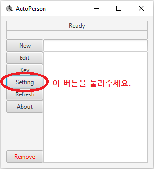
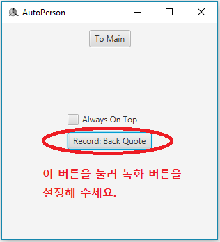
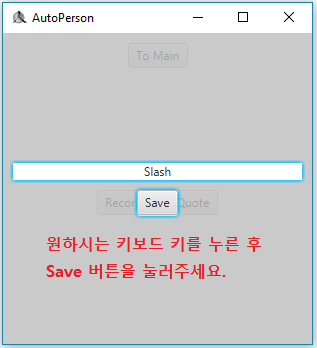
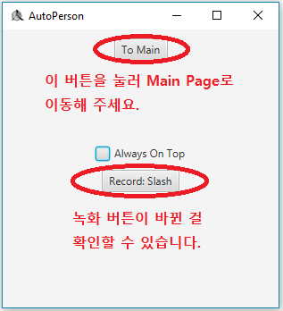

녹화 버튼을 설정하는 방법에 대해 알아봅시다.
먼저 Setting 버튼을 클릭해 주세요.

그러면 "Record: Back Quote"이라고 쓰여있는 것이 보일 겁니다.
이것은 현재 녹화 버튼이 Back Quote(`)라는 뜻입니다.
녹화 버튼을 바꾸기 위해선 버튼을 클릭하고 원하는 키보드 키를 눌러 주세요.


그 후 save 버튼을 누르시면 녹화 버튼이 바뀐 걸 보실 수 있을 겁니다.
설정이 끝났으면 To Main을 눌러 main page로 이동합시다.
